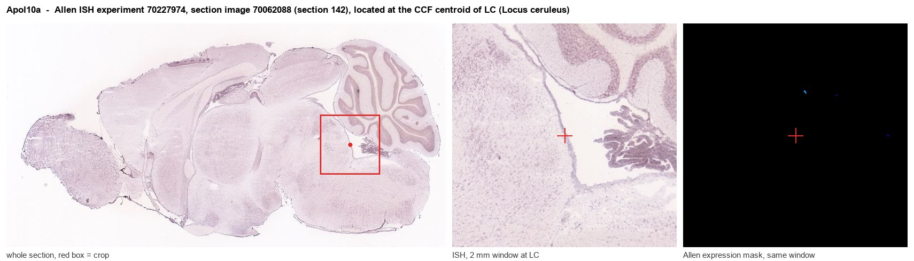
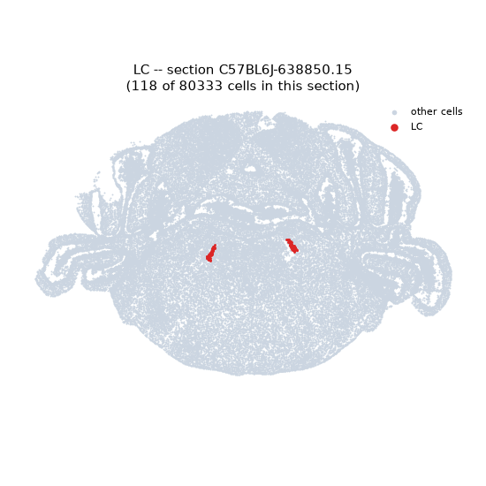
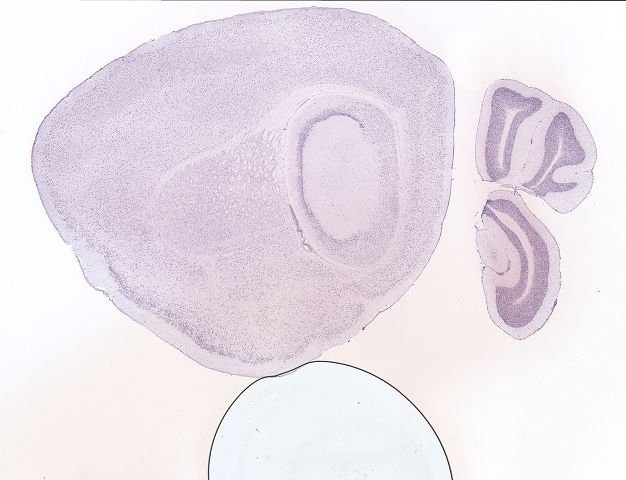
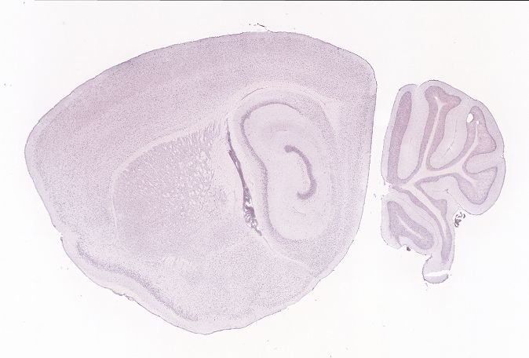
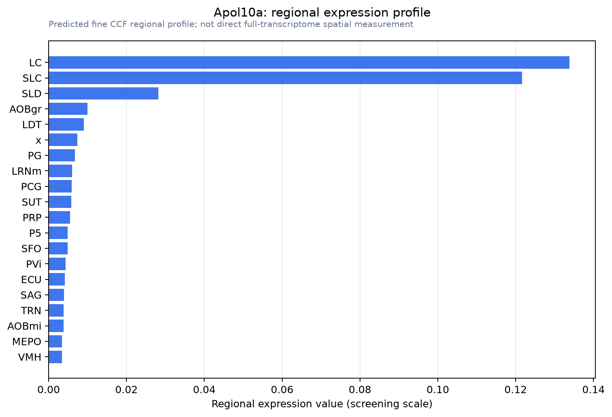

Apol10a
Apolipoprotein L 10A
Spatial tier: STRICT_EXCLUSIVE · Class: ION_CHANNEL · Top region: LC (Locus ceruleus) · Positive regions: 3/554
57.7Discovery Score
46.7Targetability Score
CEvidence grade C
What this means: Apol10a: predicted fine-region profile is strict-exclusive, with 3 positive regions out of 554 (limit 12); direct spatial validation is required.
Function in LC: evidence, prediction, innovation
- Gene function
- Apol10a is one of twelve mouse apolipoprotein L genes clustered on chromosome 15; the family has no true ortholog of human APOL1. APOL proteins are amphipathic, BH3-domain-containing lipid-binding proteins that insert into intracellular membranes and form pH-dependent, cation-selective conductance pores, contributing to autophagy, lipid trafficking and cell death (Pant et al. 2021). Mouse Apol genes including Apol10a are strongly interferon- and injury-inducible (Yoshida et al. 2021).
- Region function
- The locus ceruleus is the brain's main noradrenaline source, broadcasting to cortex, hippocampus, amygdala and spinal cord to control arousal, attention, stress reactivity and pain modulation.
- Published in this region
- none No region-specific literature found; a PubMed query for Apol10a returns no primary papers at all. The closest related evidence is biophysical: APOL family members including mouse paralogues form cation-conducting pores in intracellular membranes (Pant et al. 2021), and Apol10a is among the Apol genes upregulated in mouse disease models (Yoshida et al. 2021).
- Predicted function
- Prediction: If Apol10a marks locus ceruleus noradrenergic neurons, it most likely acts intracellularly on lysosomal/mitochondrial membranes rather than as a plasma-membrane channel, regulating lipid handling and autophagic turnover in cells with very large, energy-expensive axonal arbours. Loss of Apol10a would then be predicted to produce no acute firing phenotype but increased vulnerability of LC neurons to inflammatory, alpha-synuclein or oxidative challenge, with accelerated LC degeneration and downstream arousal/attention deficits in ageing.
- Innovation
- ★★★★★ 5/5 The gene has essentially no neuroscience literature at all, and pairing it with the well-characterized and highly degeneration-prone locus ceruleus is a genuinely open question.
- Tools
- none known (no Cre line, validated antibody or pharmacology; targeting would require knock-in reporter or intersectional AAV with Dbh-Cre).
- References
Direct evidence located at the region

Allen ISH experiment 70227974, section image 70062088 (section 142): the section that contains the CCF centroid of Locus ceruleus according to the Allen image-to-atlas alignment (reference_to_image), with a 2 mm window around that point. Left: whole section, red box = window. Middle: ISH signal. Right: Allen's expression-mask view of the same window. open this image in the Allen viewer
Look it up yourself: Allen Mouse Brain ISH for Apol10aAllen reference atlas: LC (structure 147)ABC Atlas MERFISH viewer(in the ABC Atlas choose dataset MERFISH-C57BL6J-638850-CCF, colour cells by gene "Apol10a" or by parcellation_substructure "LC")All genes confined to LC + 3-D brain
Direct spatial evidence
MERFISH REGION LOCATOR

DIRECT ALLEN ISH

DIRECT ALLEN ISH

Regional expression figure

Predicted WMB × fine-CCF profile; not direct full-transcriptome spatial measurement.
Spatial profile
Evidence and specificity
- Evidence status
- PREDICTED_FINE
- Direct sources
- None; predicted localization only
- Exclusive threshold
- 12 positive regions out of 554
- Spatial specificity
- 0.559
- Top-region fraction
- 0.298
- Filter status
- PASS
Interpretation limits
- Cell-type-to-region projection is imputed expression, not direct spatial measurement.
- Adult reference atlases do not establish stability across age, sex, strain, state, or disease.
- Transcript abundance does not guarantee protein abundance or genetic-tool performance.